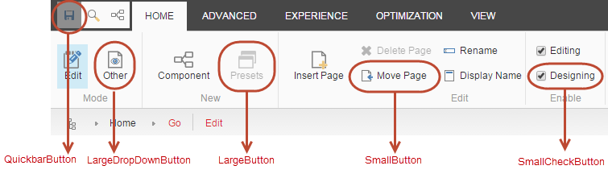
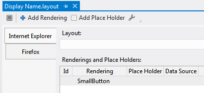
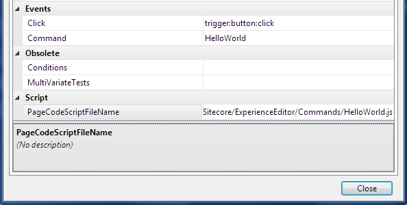
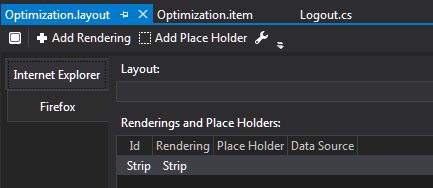

Customize the Experience Editor ribbon
Customize the Experience Editor ribbon.
To customize the Experience Editor ribbon, you can use the PageCodeScriptFileName property. In this property, you can specify a path to a JavaScript file that executes when the tabs on the ribbon loads.
Note
To improve the page load time of the Experience Editor ribbon, you can use sprites to decrease the number of image requests.
This topic outlines how to:
You can create the following ribbon controls:
QuickbarButton
LargeDropDownButton
LargeButton
SmallButton
SmallCheckButton
|  |
Note
To ensure that these controls support SPEAK commands, the controls must inherit the CommandRibbonComponent template (ID: “{CE11D144-D6A8-4B33-8E98-07DED610E952}”), which is located in /sitecore/client/Applications/ExperienceEditor/Common/Templates/Controls.
To create the new button item in the Content Editor:
In the Core database, open the Content Editor and navigate to
/sitecore/content/Applications/WebEdit/Ribbons/WebEdit/Experience Editor/Edit.Create a new item based on the relevant ribbon control template, for example, the Small Button template, in
/sitecore/templates/System/Ribbon/.For the new item, add the following information:
In the Header field, enter the display name of the button.
In the ID field, enter a unique identifier for the item. For example, you can include the ribbon group name in the ID.
In the Icon field, enter the path to the relevant icon. Depending on the button you create, adjust the icon size accordingly.
Open Sitecore Rocks and add the relevant control rendering, for example, SmallButton, to the layout of the button item that you created.
 Enter a unique ID for the rendering.
Important
Do not specify a placeholder for the rendering.
As with other SPEAK controls, you can also point to another item in the Data Source field and specify the configuration in this other item.
To create and assign a command for the new button:
In the folder structure of your Sitecore installation, navigate to
\Website\sitecore\shell\client\Sitecore\ExperienceEditor\Commandsand create a JavaScript file, for example,helloworld.js.Open the file and insert the relevant code. For example:
define(["sitecore"], function (Sitecore) { Sitecore.Commands.HelloWorld = { canExecute: function (context) { // Determines whether command is disabled or enabled. return true; }, execute: function (context) { alert("Hello world!"); } }; });In Sitecore Rocks, right-click the new button item, click Task, and then Design Layout.
Double-click the rendering, for example, SmallButton, and in the Edit Rendering Properties dialog box, change the following values:
For the Click property, set the value to trigger:button:click.
For the Command property, enter the command object name defined in Sitecore.Commands namespace, for example HelloWorld.
In the PageCodeScriptFileName field, enter the path to your JavaScript file that you want the button to execute.
 Click Close and open the Experience Editor to verify that your button appears in the ribbon.
You can assign a command in the Experience Editor that initiates a SPEAK JS pipeline, for example:
define(["sitecore", "/-/speak/v1/ExperienceEditor/ExperienceEditor.js"], function (Sitecore, ExperienceEditor) {
Sitecore.Commands.Rename =
{
canExecute: function (context) {
…
},
execute: function (context) {
context.app.disableButtonClickEvents();
ExperienceEditor.PipelinesUtil.executePipeline(context.app.RenamePipeline, function () {
ExperienceEditor.PipelinesUtil.executeProcessors(Sitecore.Pipelines.RenameItem, context);
});
context.app.enableButtonClickEvents();
}
};
});
The Experience Editor pipelines are stored as items in the Core database under: /sitecore/client/Applications/ExperienceEditor.
Note
If you want to extend a pipeline, you need to add a processor item under the relevant pipeline and set the sort order property according to the SPEAK guidelines.
The SPEAK pipelines for ribbon buttons in the Experience Editor 8.0 and later versions are independent from the regular Sitecore pipelines, such as <uiDeleteItems>, that are defined in the Sitecore.config file. Therefore, make sure that your customizations of the commands are relevant for both the Content Editor and the Experience Editor.
In the Experience Editor ribbon, to hide an existing tab, you must first create a JavaScript file that hides the tab and then assign the JavaScript file to the tab that you want to hide.
Note
To hide existing buttons, you can use the security settings.
To hide an existing tab:
In the folder structure of your Sitecore installation, navigate to
\Website\sitecore\shell\client\Sitecore\ExperienceEditor\Commandsand create a JavaScript file that hides the tab when the file is executed.In Sitecore Rocks, navigate to the tab that you want to hide, click Task, and then click Design Layout.
In the design layout for the tab that you want to hide, in the Renderings and Place Holders section, double-click the Strip rendering.
 In the Edit Rendering Properties dialog box, in the PageCodeScriptFileName field, enter the path to the JavaScript file.